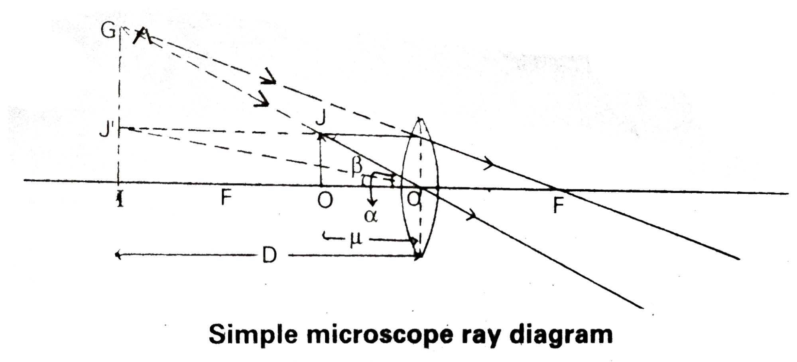
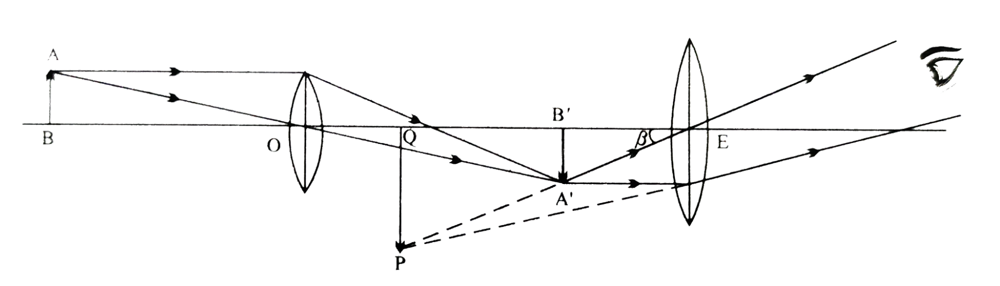

📘 Unit 6(D) - Optical Instruments
Q: What are optical instruments called? How many types are there?
Instruments with the help of which the image of an object is observed, measured, or studied using light are called optical instruments.
Types: Optical instruments are of two types—
Types: Optical instruments are of two types—
- Optical instruments producing a real image – such as the human eye and the photographic camera.
- Optical instruments producing a virtual image – such as the microscope, telescope, etc.
Q: Define the following related to the human eye.
- Near point - The minimum distance at which the eye can see an object clearly is called the near point. Normally this distance is 25 cm.
- Far point - The maximum distance up to which the eye can see an object clearly without any strain is called the far point. For a normal eye this distance is infinity (∞).
- Range of vision - The distance between the near point and the far point of the human eye is called the range of vision. For a normal eye the range of vision is: 25 cm to infinity.
- Least distance of distinct vision - The minimum distance at which the eye sees an object clearly without any blurring is called the least distance of distinct vision. It is denoted by \(D\). It is normally 25 cm.
Q: What is meant by the angle of vision?
When an object is viewed by the eye, the angle subtended at the centre of the eye by the extremities of the object is called the angle of vision. It is denoted by \(\theta\) (theta).
The angle of vision determines how large or small the object appears to us.
The angle of vision determines how large or small the object appears to us.
Q: Why does a nearby object appear large and a distant object appear small?
The larger the angle of vision, the larger the object appears, and the smaller the angle of vision, the smaller the object appears.
The angle of vision is greater for a nearby object and smaller for a distant object. Hence a nearby object appears large and a distant object appears small.
The angle of vision is greater for a nearby object and smaller for a distant object. Hence a nearby object appears large and a distant object appears small.
Q: What is a microscope called? How many types are there?
The optical instrument with the help of which very small objects or minute structures are magnified and viewed clearly is called a microscope.
Types: Microscopes are of two types—
Types: Microscopes are of two types—
- Simple microscope – it consists of a single convex lens.
- Compound microscope – it consists of two lenses (objective lens and eyepiece lens).
Q: What is meant by the magnifying power of a microscope?
The ratio of the angle of vision subtended at the eye by the final image formed by a microscope to the angle of vision subtended at the eye by the object placed at the least distance of distinct vision is called the magnifying power of the microscope. It is denoted by \(m\).
$$
m=\frac{\text{Angle of vision formed by the final image}}{\text{Angle of vision formed by the object placed at the least distance of distinct vision}}
$$
Q: What is a simple microscope called? Write its principle, construction, and uses.
A convex lens of short focal length is called a simple microscope. It is used to view small objects in a magnified and clear form.
Principle - When the object is placed within the focus of the convex lens, the lens forms a virtual, erect, and magnified image of the object. Thus the object appears larger than its actual size.
Construction - Its construction consists of a powerful convex lens, which is its main part. This lens is fitted in a handle.
Diagram
Uses -
Principle - When the object is placed within the focus of the convex lens, the lens forms a virtual, erect, and magnified image of the object. Thus the object appears larger than its actual size.
Construction - Its construction consists of a powerful convex lens, which is its main part. This lens is fitted in a handle.
Diagram
Uses -
- It is used by watchmakers and jewellers for their fine work.
- It is used to read the vernier scale fitted in instruments.
Q: Explain the simple microscope on the basis of the following. (a) Image formed at the distance of distinct vision. (b) Image formed at infinity. (2019)
- Ray diagram for image formation,
- Magnifying power when the final image

Q: How can the magnifying power of a simple microscope be increased?
The magnifying power of a simple microscope can be increased in the following ways-
- By decreasing the focal length of the lens.
- By forming the final image at the least distance of distinct vision.
Q: Explain the compound microscope on the basis of the following. (a) Image formed at the distance of distinct vision. (b) Image formed at infinity.
- Ray diagram for image formation,
- Magnifying power when the final image

Q: How can the magnifying power of a compound microscope be increased? (M.P. 2022 Supplementary)
The magnifying power of a compound microscope can be increased in the following ways-
- By decreasing the focal lengths of both lenses.
- By forming the final image at the least distance of distinct vision.
Q: What is a telescope called? How many types are there?
The optical instrument with the help of which distant objects are viewed clearly in a magnified form is called a telescope.
Telescopes are of two types—

Telescopes are of two types—
- Reflecting telescope — this uses mirrors.
- Refracting telescope — this uses lenses. Refracting telescopes are mainly of two types.
- Astronomical telescope — it is used to observe celestial bodies such as stars, planets, satellites, etc. The final image formed in it is inverted.
- Terrestrial telescope — it is used to observe terrestrial objects such as buildings, trees, mountains, etc. The final image formed in it is erect.
Q: What is meant by the magnifying power of a telescope?
The ratio of the angle subtended at the eye by the final image formed by a telescope to the angle subtended at the eye by the object is called the magnifying power of the telescope. It is denoted by \(m\).
$$
m=\frac{\text{Angle of vision formed by the final image}}{\text{Angle of vision formed by the object}}
$$
Q: Explain the astronomical telescope on the basis of the following. (a) Image formed at the distance of distinct vision. (b) Image formed at infinity.
Ray diagram for image formation,
Magnifying power when the final image
 Note this answer down from your notebook.
Note this answer down from your notebook.
Magnifying power when the final image
Q: How can the magnifying power of an astronomical telescope be increased? Or, how can the magnifying power of an astronomical telescope be increased?
The magnifying power \(m\) of an astronomical telescope can be increased in the following ways.
- By increasing the value of the focal length of the objective lens.
- By decreasing the value of the focal length of the eyepiece lens.
Q: In an astronomical telescope, the objective lens is large and thin while the eye lens is small and thick, why?
In an astronomical telescope, the objective lens is large and thin so that it can gather more light rays and form a clear, real image of the object. Whereas the eye lens is small and thick so that it can magnify that real image and form a viewable virtual image.
Q: When the diameter of the objective lens of an astronomical telescope is doubled, what effect will it have on the following?
- Magnifying power.
- Image intensity.
- Resolving power.
- On magnifying power - Magnifying power does not depend on the diameter, hence it remains unchanged.
- On image intensity - The intensity of the image \((I)\) is proportional to the square of the aperture diameter of the objective in metres \((d)\). Thus when the diameter is doubled, the image intensity becomes four times.
- On resolving power - The resolving power of the telescope is proportional to the diameter \((d)\) of the objective lens, so when the diameter is doubled, the resolving power also becomes double.
Q: What is the difference between the objective lens of a telescope and that of a microscope?
The objective lens of a telescope has a large aperture, whereas the objective lens of a microscope has a small aperture.
Q: Write the difference between a simple microscope and an astronomical telescope. (2022)
The following are the differences between a simple microscope and an astronomical telescope.
- A microscope uses a single convex lens, whereas an astronomical telescope uses two convex lenses.
- A simple microscope is used to view very small objects, whereas an astronomical telescope is used to view large and distant objects.
- The image formed in a simple microscope is always larger than the actual object. The image formed in an astronomical telescope is always smaller than the actual object.
Q: Compare a compound microscope and an astronomical telescope.
Comparison of compound microscope and astronomical telescope
| Compound microscope | Astronomical telescope |
|---|---|
| It forms a magnified image of small objects placed nearby. | It forms a magnified image of large objects situated at a long distance. |
| The focal length of the objective lens is less than the focal length of the eye lens. | The focal length of the objective lens is much greater than the focal length of the eye lens. |
| The difference between the focal lengths of the objective lens and the eye lens is very small. | The difference between the focal lengths of the objective lens and the eye lens is very large. |
| The image formed is always larger than the actual object. | The image is always smaller than the actual object. |
Q: Explain the terrestrial telescope on the basis of the following. (a) Image formed at the distance of distinct vision. (b) Image formed at infinity.
Ray diagram for image formation,
Magnifying power when the final image
Construction - A terrestrial telescope uses three convex lenses. To make the inverted image formed by the telescope erect, a third lens (between the objective lens and the eyepiece lens) is fitted.
The lens used for this is called the field lens. This lens is placed between the eyepiece lens and the objective lens in such a way that the image formed by the eyepiece lens forms at twice its focal length. The image formed by the eyepiece lens is erect and of the same size, at twice its focal length, towards the eyepiece lens. This image acts as an object for the eyepiece lens.
The rest of the construction of the terrestrial telescope is the same as that of the astronomical telescope. Hence in this telescope too, the final image can be formed at the least distance of distinct vision or at infinity by moving the eyepiece lens back and forth.
Magnifying power when the final image
Construction - A terrestrial telescope uses three convex lenses. To make the inverted image formed by the telescope erect, a third lens (between the objective lens and the eyepiece lens) is fitted.
The lens used for this is called the field lens. This lens is placed between the eyepiece lens and the objective lens in such a way that the image formed by the eyepiece lens forms at twice its focal length. The image formed by the eyepiece lens is erect and of the same size, at twice its focal length, towards the eyepiece lens. This image acts as an object for the eyepiece lens.
The rest of the construction of the terrestrial telescope is the same as that of the astronomical telescope. Hence in this telescope too, the final image can be formed at the least distance of distinct vision or at infinity by moving the eyepiece lens back and forth.
Q: How is an astronomical telescope converted into a terrestrial telescope? What effect does this have on its magnifying power?
An astronomical telescope is converted into a terrestrial telescope by fitting a convex lens between the objective and the eyepiece.
Effect on magnifying power: There is no change in the magnifying power when an astronomical telescope is converted into a terrestrial telescope.
Effect on magnifying power: There is no change in the magnifying power when an astronomical telescope is converted into a terrestrial telescope.
Q: Write two characteristics of a refracting telescope.
- The image formed by it is brighter compared to the image formed by a reflecting telescope.
- The image formed by it is free from spherical aberration.
Q: Write two differences between refracting telescope and reflecting telescope. (2023)
The following are two differences between a refracting telescope and a reflecting telescope.
- In a refracting telescope, light from the object is refracted by lenses to form the image, whereas in a reflecting telescope, light is reflected by mirrors to form the image.
- In a refracting telescope the main part is a convex lens, whereas in a reflecting telescope the main part is a concave mirror.
Q: What do you understand by the resolving power and limit of resolution of optical instruments? Explain. (Question Bank)
Resolving power - The ability of an optical instrument to separately distinguish the images of two closely-spaced objects is called its resolving power.
Limit of resolution - The limit of resolution of an optical instrument is equal to the minimum angular separation subtended at the objective of the instrument by two point objects.
Limit of resolution - The limit of resolution of an optical instrument is equal to the minimum angular separation subtended at the objective of the instrument by two point objects.
Q: What are the factors on which the resolving power of a telescope depends?
The resolving power of a telescope is inversely proportional to the wavelength of light and directly proportional to the aperture of the telescope's objective.
Q: The diameter of the objective lens of a telescope is 1 metre. Calculate the resolving power for light of wavelength 4538Å. (2022)
Q: What is meant by a defect of vision?
As a person's age increases, or due to other causes, the lens of the eye becomes hardened and the muscles become weak, due to which the real image of an object is not formed on the retina of the eye, and as a result the object appears unclear and blurred. This defect that occurs in the eye is called a defect of vision.